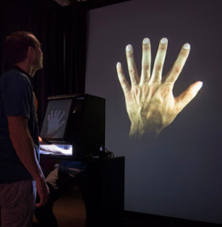
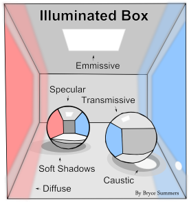
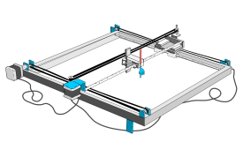
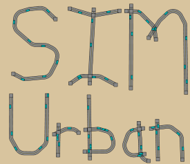
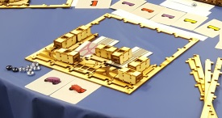

More specifically, we are at the Integrated Digital Media Program.
This website contains the work of Bryce Summers and collaborators in three main categories. Some curated highlights are shown on this page and many more can be found on each categories' page.
| Consultancy | Research | Art / Products |
|---|---|---|
|  |  FIXME: Broaden the classifications for my research. |
 |
|  |  | |
| More | More | More |
| Research, my work with the Intellectual Community Building Lab | Consultancy, my work with clients, including Artists and Organizations. | Business, products and art related to my research. |
Here are some links to additional information:
Bryce spends most of his time each year at the Tandon School of Engineering in Brooklyn, NY, USA.

More specifically, we are at the Integrated Digital Media Program.